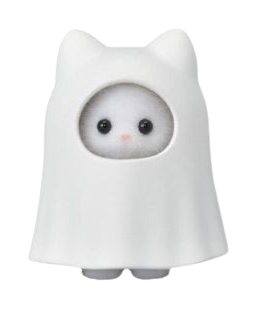

Casa vieja

Estamos en la casa vieja de la granja
solo hay un pequeño cofre encima de la
mesa
Tienes la capacidad de abrir
el cofre o regresar
a buscar otro camino
¿Que harás?
Abrir cofre
Hablarle al hada